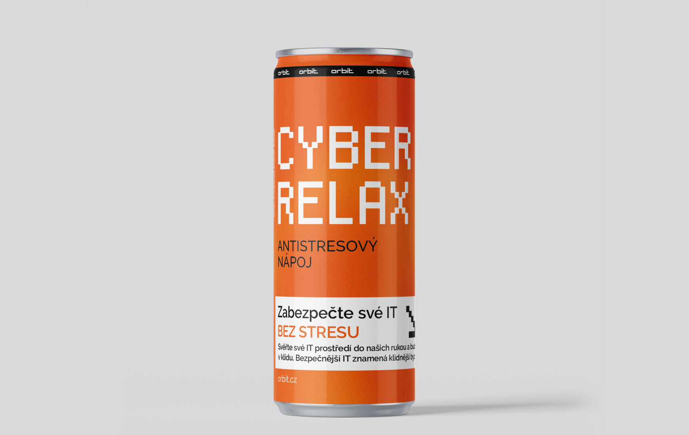
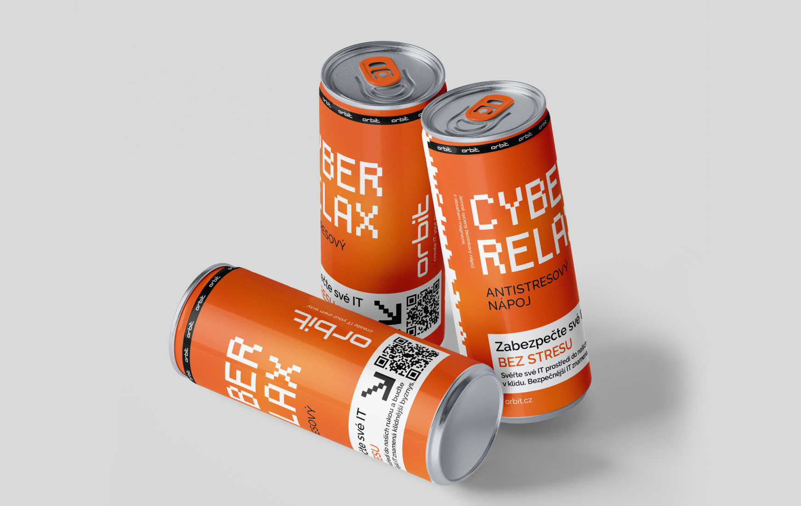
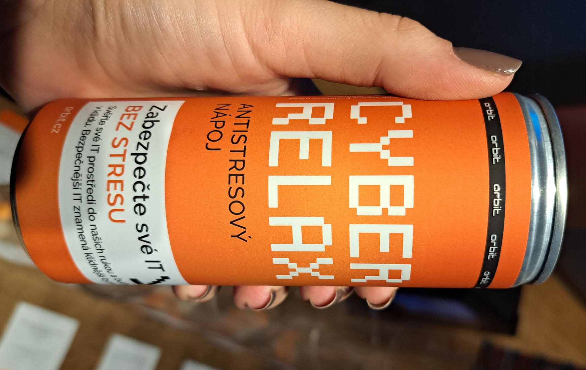
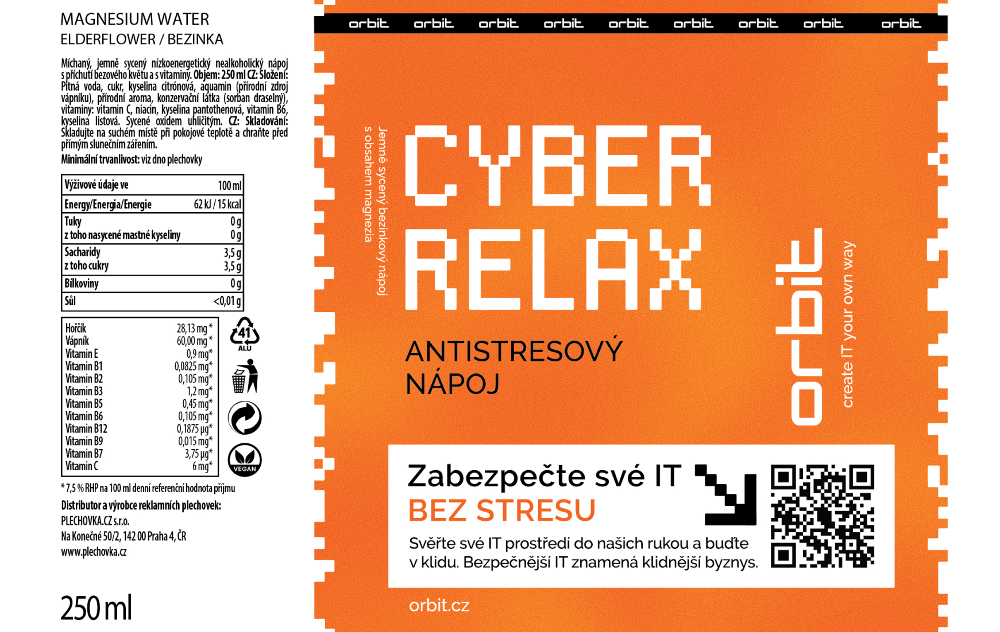

The core idea connects the physiological benefit of Magnesium—known for relaxation—with the company's value proposition. I designed a label centered on the slogan "Antistress Drink," linking the calming effect of the beverage to the stress-free security ORBIT delivers.
Designing a custom drink for tech conferences
Role
Graphic Designer
Company
ORBIT s.r.o.
Product
Cyber Relax
Focus
Product Design, Marketing, Brand Awareness

Mission
Cutting through conference noise
For the autumn conference season, IT security specialist ORBIT needed a marketing giveaway that would stand out among the usual pens and notepads. The goal was to boost brand awareness across four major events and drive traffic to their security products page, all while offering attendees something genuinely useful: a moment of refreshment.



The Core Idea
High-contrast design
To ensure the product didn't get lost in the crowd, I utilized ORBIT's signature brand orange for maximum contrast. The typography features a pixelated font style to immediately convey a technical, digital feel. A prominent QR code acts as a digital bridge, leading thirsty users directly to the company website.

Result
Brand in hand
The 'Cyber Relax' drink put the brand directly in the hands of the target audience. It turned abstract IT security services into a tangible product that potential clients could actually hold and enjoy. The distinct orange packaging increased brand visibility on the conference floor, while the "anti-stress" messaging resonated with busy professionals, delivering the brand promise with every sip.